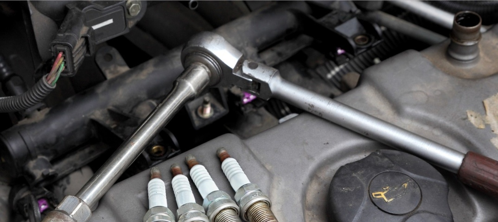

Назначение и принцип работы Топливо-воздушная смесь в камере сгорания бензинового двигателя не загорается сама – ему нужна искра. Этим и занимается свеча зажигания. Инженеры Роберта Боша, которые изобрели эту деталь в начале двадцатого века, использовали простое свойство электричества – если пропустить ток по одному металлическому электроду и рядом с ним будет другой металлический электрод, то между ними возникнет дуговая искра. Она и поджигает топливо-воздушную смесь в двигателе. В свече ток проходит по центральному электроду, а для возникновения искры есть боковой электрод. Ресурс свечей зажигания
По словам производителей, стандартный срок службы обычных свечей с никелевым центральным электродом может быть от 30 до 45 тысяч километров. В случае с платиновыми свечами – это уже 70-80 тысяч, а иридиевые ходят и того дольше – до 100 тысяч и выше. Это усредненные показатели. Лучше каждые 10-15 тысяч проверять состояние свечей (самостоятельно или на СТО) и принимать решение об их замене.
Какие свечи являются никелевыми, платиновыми и иридиевыми – обычно понятно из кода детали. Также эта характеристика указывается в описании. Еще свечи стандартно имеют один боковой электрод, но могут иметь и два, три или даже четыре. Например, свечи на Гольф 4 1.6 имеют три электрода и их ресурс 60 тыс км. Это действительно улучшает конструкцию и надежность работы свечи. В чем отличие одной серии от другой – можно почитать на сайтах производителей запчастей. Но в общем отметим, что применение драгоценных металлов – это необходимость, возникшая в процессе создания современных моторов, которые должны быть меньше, при этом мощнее, надежнее и чище. И без применения платины и иридия в производстве электродов достичь таких результатов было бы проблематично.
Ниже приведены автозапчасти от наших партнеров,которые всегда можно заказать/находятся на складе
Бренд
Цена (татиты)
Ср. рейтинг покупателей
Gearshift mechanism
10937
2
Autofors
15611
8
Intelligence in speed (IIS)
13010
6
Promotive
18136
4
Autotechpro
19310
5
Для покупки/заказа автозапчастей обратитесь в офис или на наши контакты
Не нашли нужный товар обратитесь к шему дежурному менеджеру:+7 (949) 312-92-99 ПН-ПТ с 9 до 17:00. В субботу - до 14:30. Перед выездом за товаром, обязательно уточняйте статус заказа в личном кабинете на сайте или у менеджера. *Благодарим за понимание.